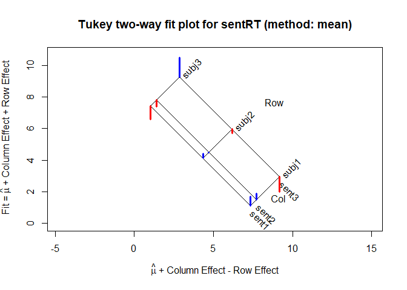
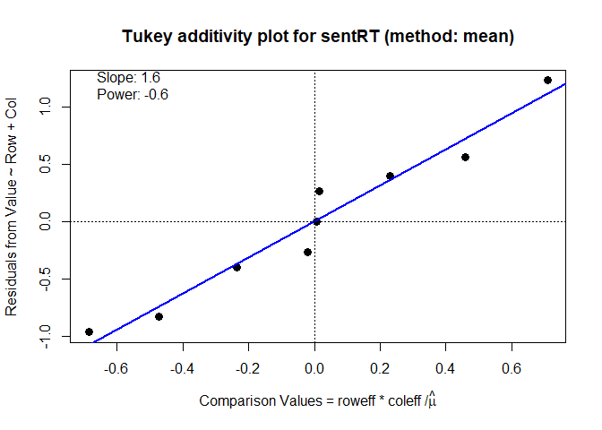

Analysis of Two-Way Tables a la Tukey
Version: 0.6.3
The twoway package provides analysis and graphical methods for two-way tables with one observation per cell, most typically used in an Analysis of Variance (ANOVA) context. The methods follow Tukey (1949), “One Degree of Freedom for Non-additivity”, explained more concretely in Tukey (1972), Exploratory Data Analysis, but the graphical ideas are more interesting and general:
- How to display an assumed additive relation between two factors graphically, and visualize departures from an additive fit?
- How to assess visually whether a power transformation of the response might be more nearly additive in the factors?
The goal of the package is to introduce these ideas in R, and allow further development. This R implementation is based on my SAS macro, twoway.sas.
Installation 📦
This currently released package can be installed directly from CRAN:
install.packages("twoway")You can install the development version twoway from github with:
# install.packages("devtools")
devtools::install_github("friendly/twoway")Example
A trivial example shows the analysis of a 3 x 3 table, containing mean reaction times for three subjects presented with three types of sentences and asked to judge whether the sentence was TRUE or FALSE. The questions are:
- How does reaction time vary with subject and sentence type?
- Can the results be accounted for by an additive model, with an effect for subject and for sentence type?
- Are there any unusual observations that deviate from an additive model?
- If there are systematic departures from additivity, could a power transformation of the response (1/x, log(x), sqrt(x), , …) make the simpler additive model more tenable, and more easily understood?
library(twoway)
data("sentRT")
sentRT
#> sent1 sent2 sent3
#> subj1 1.7 1.9 2.0
#> subj2 4.4 4.5 5.7
#> subj3 6.6 7.4 10.5The twoway() function gives the basic analysis: a decomposition of the two-way table, giving the:
- grand mean (),
- row effects (),
- column effects (), and
- residuals ()
sent.2way <- twoway(sentRT)
print(sent.2way)
#>
#> Mean decomposition (Dataset: "sentRT"; Response: Value)
#> Residuals bordered by row effects, column effects, and overall
#>
#> sent1 sent2 sent3 roweff
#> + -------- -------- -------- + --------
#> subj1 | 0.56667 0.40000 -0.96667 : -3.10000
#> subj2 | 0.26667 0.00000 -0.26667 : -0.10000
#> subj3 | -0.83333 -0.40000 1.23333 : 3.20000
#> + ........ ........ ........ + ........
#> coleff | -0.73333 -0.36667 1.10000 : 4.96667twoway() also allows for a robust fitting by row and column medians, using Tukey’s idea of median polish, as implemented in stats::medpolish(). This uses method="median" in the call to twoway().
print(twoway(sentRT, method="median"), border=2)
#>
#> Median polish decomposition (Dataset: "sentRT"; Response: Value)
#> Residuals bordered by row effects, column effects, and overall
#>
#> sent1 sent2 sent3 roweff
#> + ---- ---- ---- + ----
#> subj1 | 0.0 0.0 -1.1 : -2.6
#> subj2 | 0.1 0.0 0.0 : 0.0
#> subj3 | -0.6 0.0 1.9 : 2.9
#> + .... .... .... + ....
#> coleff | -0.2 0.0 1.2 : 4.5The result is much simpler, in that most residuals are closer to 0, and one large one stands out.
Plot methods
The plot method for twoway objects currently provides two types of plots:
- a plot of fitted values under the additive models and residuals (the default,
which="fit") - a diagnostic plot of interaction residuals vs. comparison values under additivity (
which="diagnose").
plot(sent.2way)
The diagnostic plot shows the regression of residuals under the additive model against the comparison values under the additive model. If the points in this plot are reasonably linear and have a non-zero slope, b, a suggested power transformation of the response to will often remove non-additivity.
plot(sent.2way, which="diagnose")
#> Slope of Residual on comparison value: 1.6
#> Suggested power transformation: -0.6
#> Ladder of powers transformation: reciprocal rootThere is an opposite-corner pattern to the residuals in the analysis by means. In the diagnostic plot, the positive slope, suggests a power transformation , which can be taken as close to . Alternatively, reaction time data is often more easily analyzed by classical methods and the results more easily understood in terms of response speed, using the transformation .
anova method
In the present version, the anova() method for a "twoway" object gives the results of two analyses: one for the additive model, and one for the model allowing 1 df for non-additivity. Both of these assume that row and column effects are fit using means (method="mean").
anova(sent.2way)
#> Dataset: sentRT; method: "mean"
#>
#> Analysis of Variance Table, assuming additivity
#>
#> Df Sum Sq Mean Sq F value Pr(>F)
#> row 2 59.580 29.7900 30.2949 0.003835 **
#> col 2 5.647 2.8233 2.8712 0.168574
#> Residuals 4 3.933 0.9833
#> ---
#> Signif. codes: 0 '***' 0.001 '**' 0.01 '*' 0.05 '.' 0.1 ' ' 1
#>
#>
#> Analysis of Variance Table, allowing non-additivity
#>
#> Df Sum Sq Mean Sq F value Pr(>F)
#> row 2 59.580 29.7900 513.449 0.0001572 ***
#> col 2 5.647 2.8233 48.662 0.0051710 **
#> nonadd 1 3.759 3.7593 64.793 0.0040046 **
#> pure error 3 0.174 0.0580
#> ---
#> Signif. codes: 0 '***' 0.001 '**' 0.01 '*' 0.05 '.' 0.1 ' ' 1There is a variety of other tests for additivity in twoway tables with per cell. A number of these are implemented in the additivityTests package.
Other methods and functions
- The
as.data.frame()method for a"twoway"object gives a tidy data.frame result, containing the components of the fitted values and other quantities.
as.data.frame(sent.2way)
#> row col data fit dif residual roweff coleff nonadd
#> 1 subj1 sent1 1.7 1.13 7.33 0.567 -3.1 -0.733 0.45772
#> 2 subj2 sent1 4.4 4.13 4.33 0.267 -0.1 -0.733 0.01477
#> 3 subj3 sent1 6.6 7.43 1.03 -0.833 3.2 -0.733 -0.47248
#> 4 subj1 sent2 1.9 1.50 7.70 0.400 -3.1 -0.367 0.22886
#> 5 subj2 sent2 4.5 4.50 4.70 0.000 -0.1 -0.367 0.00738
#> 6 subj3 sent2 7.4 7.80 1.40 -0.400 3.2 -0.367 -0.23624
#> 7 subj1 sent3 2.0 2.97 9.17 -0.967 -3.1 1.100 -0.68658
#> 8 subj2 sent3 5.7 5.97 6.17 -0.267 -0.1 1.100 -0.02215
#> 9 subj3 sent3 10.5 9.27 2.87 1.233 3.2 1.100 0.70872